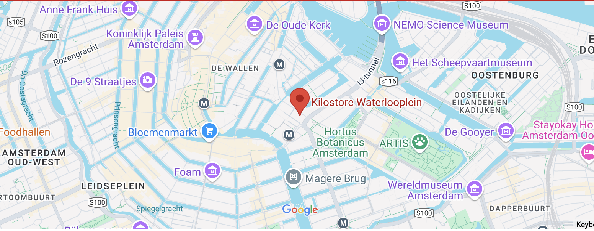
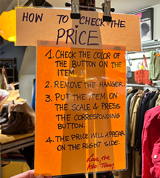

MIJN BEZOEK
Voor mijn bezoek aan Kiloshop ben ik naar het filiaal op het Waterlooplein gegaan. Bij binnenkomst werd ik meteen verrast door de kleurrijke en gezellige ambiance in de winkel. Elke hoek was met zorg aangekleed met vintage objecten, wat de visie op recycling duidelijk onderstreepte.
Je kunt op je gemak rondneuzen naar unieke kledingstukken, terwijl op de achtergrond oude platen uit de jaren '70 spelen.
Tijdens mijn bezoek merkte ik ook op hoe vriendelijk en behulpzaam het personeel was. Ze stonden altijd klaar om vragen te beantwoorden en hielpen me met het vinden van de juiste maat of stijl. Wat ik vooral leuk vond, was hoe alles geprijsd werd op gewicht, wat het winkelen niet alleen uniek maakte, maar ook verrassend betaalbaar.
De selectie kleding was ontzettend divers; van retro jeans tot opvallende bloesjes en accessoires die perfect passen bij een vintage stijl. Het voelde alsof ik een schatkamer aan het doorzoeken was. Ook was het fijn dat de winkel overzichtelijk en schoon was, waardoor het echt een plezier was om er rond te lopen.
Al met al vond ik Kiloshop een inspirerende plek waar duurzaamheid en stijl hand in hand gaan. Het is zeker een aanrader voor iedereen die op zoek is naar iets unieks en bijzonders!